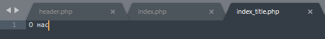

После установки битрикса оставим примерно вот такие файлы и папки. Чтобы начать натягивать вёрстку создадим папку local, а в local создадим папку templates. В templates будут хранится шаблоны нашего сайта.

А вообще битрикс по умолчанию помещает шаблоны по пути /bitrix/templates, но с какой то версии была введена возможность создавать папку local и хранить в ней наш сайт.
Теперь создадим в local/templates папку с названием нашего сайта, например, main. И начнём добавлять в него файлы. Давайте первым файлом добавим description.php. Этот файл позволяет кратко описать наш шаблон сайта, для того чтобы потом в админке по этому описанию выбирать какой шаблон подключить:
//description.php
<?php
$arTemplate = [
'NAME' => 'Основной шаблон Main',
'DESCRIPTION' => 'Описание шаблона Main ...'
];
?>
Чтобы для сайта установить наш шаблон-вёрстку, пройдём в админку и по пути Настройки -> Настройки продукта -> Список сайтов откроется табличка со списком сайтов. У нас там будет один сайт с id - s1, жмём на него и в открывшихся настройках опускаемся вниз до настроки Шаблон сайта, и в вехней строке выберем наш шаблон из списка. Всё, мы подключили к сайту наш шаблон:

Далее создадим ещё 2 файла - header.php и footer.php, также нужно сюда же добавить скриншот нашего шаблона. Скриншот дожен быть 800х600 и расширение .gif. Вот что получилось:

Всего в папке local можно создать несколько папок: templates, components,php_interface, wizard, модули.
Эта папка есть в ядре bitrix. Я также добавил её в папку local как видно из картинки выше. В ней создал файл init.php, этот файл выполнится до того как подгрузится наш сайт, а значит в этом файле можно задать какие нибудь свои пользовательские функции, константы, переменные, которые уже будут доступны в коде последующих загружаемых файлах. Вот что лежит пока в файле init.php:
<?php
use Bitrix\Iblock\IblockTable;
use Bitrix\Main\Loader;
//Определим свою константу, в которой будет лежать путь до папки .default
define("DEFAULT_TEMPLATE_PATH", "/local/templates/.default");
//Функция выводит красиво массивы
function debug($data){
echo '<pre>';
var_dump($data, 1);
echo '</pre>';
}
//Функция получает id инфоблока по его символьному коду
function getIblockIdByCode(string $code): int
{
Loader::includeModule('iblock');
$iblock = IblockTable::getList([
'filter' => [
'CODE' => $code,
],
'select' => [
'ID',
'CODE',
],
])->fetch();
if (!isset($iblock['ID'])) {
throw new Exception("Не найден инфоблок с кодом {$code}");
}
return (int) $iblock['ID'];
}
Для одного сайта могут использоваться несколько шаблонов. Например, на главной странице нет сайдбара, а на других есть, поэтому могут быть несколько папок с шаблонами, но стили для всех этих шаблонов одни и те же. Чтобы не копировать стили во все шаблоны, можно создать рядом с шаблонами папку .default и в неё сложить все наши стили, скрипты, картинки:

Видно что style.css лежит не в папке css, не обращаем внимания, так вёрстка сделална просто.
Но теперь нельзя подключить наши скрипты и стили в файле header.php через константу SITE_TEMPLATE_PATH, для этого в init.php я создал свою константу DEFAULT_TEMPLATE_PATH, которая будет вести до папки .deafult, чтобы подключить скрипты и стили буду использовать её.
header.php и footer.php всегда подгружаются из шаблона сайта, а контент из файлов-страниц
Теперь из вёрстки нужно вынести повторяющийся html код в header.php и в footer.php. Оставшийся код в index.html это и будет содержимым, которое будет менятся, его перемещаем в index.php и подключаем вверху header.php таким кодом:
require($_SERVER["DOCUMENT_ROOT"]."/bitrix/header.php");
И footer.php таким же кодом:
require($_SERVER["DOCUMENT_ROOT"]."/bitrix/footer.php");

<?php
require($_SERVER["DOCUMENT_ROOT"]."/bitrix/footer.php");
$APPLICATION->SetTitle("Главная");
$APPLICATION->SetPageProperty("TITLE", "Digital-агентство WeCoders");
$APPLICATION->SetPageProperty("keywords", "о нас, о компании, we coders, сайты");
$APPLICATION->SetPageProperty("description", "о нашей компании");
?>
<p>Содержимое на главной</p>
<?php
require($_SERVER["DOCUMENT_ROOT"]."/bitrix/footer.php");
?>
header.php
Подключим в файле header.php наши стили, скрипты, и остальные meta данные:
<?php if(!defined("B_PROLOG_INCLUDED") || B_PROLOG_INCLUDED!==true) die(); ?>
<?php
use Bitrix\main\Page\Asset;
?>
<html>
<head>
<title><?php $APPLICATION->ShowTitle(); ?></title>
<link rel="shortcut icon" type="image/x-icon" href="/img/favicon.png">
<?php
Asset::getInstance()->addCss(SITE_TEMPLATE_PATH . '/css/bootstrap.min.css');
Asset::getInstance()->addCss(SITE_TEMPLATE_PATH . '/css/owl.carousel.css');
Asset::getInstance()->addCss(SITE_TEMPLATE_PATH . '/css/animate-text.css');
Asset::getInstance()->addCss(SITE_TEMPLATE_PATH . '/css/magnific-popup.css');
Asset::getInstance()->addCss(SITE_TEMPLATE_PATH . '/css/et-line.css');
Asset::getInstance()->addCss(SITE_TEMPLATE_PATH . '/css/pe-icon-7-stroke.css');
Asset::getInstance()->addCss(SITE_TEMPLATE_PATH . '/css/shortcode/shortcodes.css');
Asset::getInstance()->addCss(SITE_TEMPLATE_PATH . '/css/meanmenu.min.css');
Asset::getInstance()->addCss(SITE_TEMPLATE_PATH . '/css/font-awesome.min.css');
Asset::getInstance()->addCss(SITE_TEMPLATE_PATH . '/style.css');
Asset::getInstance()->addCss(SITE_TEMPLATE_PATH . '/css/responsive.css');
Asset::getInstance()->addJs(SITE_TEMPLATE_PATH . '/js/vendor/modernizr-2.8.3.min.js');
Asset::getInstance()->addJs(SITE_TEMPLATE_PATH . '/js/vendor/jquery-1.12.0.min.js');
Asset::getInstance()->addJs(SITE_TEMPLATE_PATH . '/js/bootstrap.min.js');
Asset::getInstance()->addJs(SITE_TEMPLATE_PATH . '/js/owl.carousel.min.js');
Asset::getInstance()->addJs(SITE_TEMPLATE_PATH . '/js/jquery.counterup.min.js');
Asset::getInstance()->addJs(SITE_TEMPLATE_PATH . '/js/waypoints.min.js');
Asset::getInstance()->addJs(SITE_TEMPLATE_PATH . '/js/jquery.magnific-popup.min.js');
Asset::getInstance()->addJs(SITE_TEMPLATE_PATH . '/js/jquery.mixitup.min.js');
Asset::getInstance()->addJs(SITE_TEMPLATE_PATH . '/js/jquery.meanmenu.js');
Asset::getInstance()->addJs(SITE_TEMPLATE_PATH . '/js/jquery.nav.js');
Asset::getInstance()->addJs(SITE_TEMPLATE_PATH . '/js/jquery.parallax-1.1.3.js');
Asset::getInstance()->addJs(SITE_TEMPLATE_PATH . '/js/animate-text.js');
Asset::getInstance()->addJs(SITE_TEMPLATE_PATH . '/js/plugins.js');
Asset::getInstance()->addJs(SITE_TEMPLATE_PATH . '/js/main.js');
Asset::getInstance()->addJs('адрес');//можно также указать загрузку например плагина jquery, указав адрес плагина в сети
Asset::getInstance()->addString('<meta name="viewport" content="width=device-width, initial-scale=1">');
Asset::getInstance()->addString('<link href="https://fonts.googleapis.com/css?family=Lato:300,400,700" rel="stylesheet">');
//если есть подключение шрифтов по CDN, то также через addString как и viewport помещаем весь тег link в скобки в этот метод.
?>
<?php $APPLICATION->ShowHead();?>
</head>
<body>
<div id="panel"><?php $APPLICATION->ShowPanel(); ?></div>
Также есть другой синтаксис подключения скриптов и стилей без помощи класса Asset, а с помощью объекта $APPLICATION:
<?php
$APPLICATION->SetAdditionalCSS(SITE_TEMPLATE_PATH . '/css/style.css');
$APPLICATION->AddHeadScript(SITE_TEMPLATE_PATH . '/js/script.js');
или скрипт можно подключать указав в скобках CDN
$APPLICATION->AddHeadScript('https://ajax.googleapis.com/ajax/libs/jquery/3.0.1/jquery.min.js');
?>
footer.php
В этом файле в принципе только html и защита.
Если в php коде сделать ошибку, то битрикс вместо сообщения об ошибке выдасть сообщение, что ошибки отключены и если мы хотим их включить, то надо изменить кое что в файле settings.php, Файл этот находится по пути bitrix/settings.php. Изменять его можно только когда разрабатывается сайт. В этом файле различные настройки в массивах, через поиск ищем свойство в массиве - debug и ставим ему значение true.
Когда я использовал комплексный компонент для вывода разделов инфоблока, то на index.php располагалось подключение комплексоного компонента, который подтягивал файл news.php. В этом файле вызывался компонент для отображения разделов "bitrix:catalog.section.list" и на странице по клику по одному из разделов мне нужно перейти на страницу с отображением подразделов выбранного раздела. В этих случаях подгружается файл section.php, на нём размещаю опять компонент "bitrix:catalog.section.list", но подразделов пока не увижу, а появятся опять разделы. Для того чтобы вывести подразделы нужно в параметрах указать символьный код родительского раздела, для ключа SECTION_CODE задаём такой код: $arResult['VARIABLES']['SECTION_CODE']
Как можно заметить, то у главной страницы фон шапки черный и прозрачный, а у других страниц он белый. Это задаётся разными классами у тега header в header.php - это transparent-header и white-bg. Идём в header.php и в теге header вместо этих класов пишем код:
<header id="sticky-header" class="header-area header-wrapper GetCurDir() === '/') ? transparent-header : white-bg?>">
...
</header>
Функция $APPLICATION->GetCurDir() возвращает строку, которая говорит в какой папке мы сейчас находимся. Если вернётся '/', то мы в корне сайте, т.е. на главной странице, если нет, значит мы на любой другой странице, где фон хедера должен быть белым.
На сайте не всё можно вывести с помощью компонента "bitrix: news.list", ну или можно но лучше использовать для таких целей специально предназначенные компоненты, например "bitrix: main.include". Этот компонент даёт возможность сделать какой нибудь текст или картику быть редактируемыми. Вот например в нашей вёрстве есть такая секция:
Сделаем так, чтобы можно было включить Режим правки и прямо в публичной части изменить заголовок, текст или картинку. Такой компонент хранит данные не в БД, а в файлах, содержимое которых мы и будем изменять. Почему сразу не вынести весь блок в компонент? Для того чтобы у управляющего содержимым не было возможности изменять вёрстку, поэтому и выносим каждый кусочек по отдельности.
Начнём с заголовка. Чтобы добавить компонент на страницу жмём Изменить страницу и справа добавим этот компонент. Он находится по пути Служебные -> Включаемые области -> Вставка включаемой области. Перетаскиваем его и откроется окно настроек:
Итак настроим для начала режим для страницы. При этом режиме файл с содержимым, который будет подключаться, ищется в той же папке где и сама страница, на которой расположен код подключения компонента, в нашм случае это index.php, а значит файл должен иметь в названии слово index и плюс через нижнее подчёркивание прибавляем суффикс, задаваемый в настройках. Создадим в корне нашего сайта файл index_суффикс.php, вместо слова ""суффикс" понятно вставим наше осмысленное слово:
И теперь в этот файл(index_суффикс.php) вынесем из вёрстки текст заголовка. Всегда страемся выносить по меньше тегов в такие файлы, чтобы не сломал вёрстку заказчик:
Далее код подключения компонента разместим в том месте, откуда мы убрали заголовок:
<?$APPLICATION->IncludeComponent(
"bitrix:main.include",
"",
Array(
"AREA_FILE_SHOW" => "page",
"AREA_FILE_SUFFIX" => "title"
)
);?>
Заметим что в массиве настройки для компонента заданы слова page(для страницы) и суффикс title. Проверяем на сайте как работает. Жмём Режим правки и наводим на заголовок, появится окошко правки данного участка. Можно нажать Изменить область и откроется окно для измененения текста заголовка или можно нажать шестерёнку и откроется окно с настройками компонента.
С другими 2мя частями - текстом и картинкой проделываем те же действия. Добавляем компонент, настраиваем его также, только суффикс другой пишем, создаём файл, выносим в него вёрстку и на место вёрстки пишем код с подключением компонента:
Рассмотрим режим из файла. Если выбрали этот режим в настроках компонента, то вместо ввода суффикса появляется поле вводя пути до файла включаемой области относительно корня сайта. Этот режим хорошо подходит для участков вёрстки, содержимое которых одинакого на всех странцах сайта, то есть не привязано конкретно к странице как в примере выше. Таким участком вёрстки можно взять верхнюю строку сайта, где указаны почта, телефон и соцсети, они указаны на всех страницах сайта, кроме главной. Вёрстка этой строки находится в файле about_us.html. Копируем её и переносим в header.php нашего шаблона и вставляем до шапки:
И также сделаем условие отображения этого участка кода, если находимся на главной, то не отображать эту строку и наоборот. Итак во включаемую область нужно вынести текст, который лежит между span, это почта и телефон. У человека, который будет править эти области будет возможность изменить иконку и текст:
Ещё одно замечание, так как мы находимся в header.php, а он находится в нашем шаблоне сайта, и в нём добавляем включаемые области, то файлы с включаемыми областями надо хранить в папке, которая должна находится в нашем шаблоне. Для этого создадим папку includes прямо в нашем шаблоне main_template. Теперь в папке includes создадим 2 файла по количеству включаемых областей. 1й это header_mail.php 2й header_phone.php и раскидаем в них соответсвующие вёрстки. Такие названия для файлов, которыми мы обозвали эти 2 файла, не обязательны, можно назвать как угодно, просто по смыслу называем так. Первая часть названия это файл, к которому они относятся, вторая часть это элемент вёрстки, к которому они относятся, повторю эти названия мы сами называем как удобно.
Далее нужно взять код подключения копмонента, для этого идём на страницу любую нашего сайта и жмём Изменить страницу, затем вынесем компонент включаемая область куда нибудь и настроем его на режим - из файла, всё сохраняем и идём в текстовый редактор на ту страницу куда выносил компонент, копируем его и вставляем в файл header.php туда, откуда были вырезаны куски с почтой и телефоном. Должно получится так:
<?$APPLICATION->IncludeComponent(
"bitrix:main.include",
"",
Array(
"AREA_FILE_SHOW" => "file",
"PATH" => SITE_TEMPLATE_PATH . "/includes/header_mail.php"
)
);?>
На странице О нас также есть точно такой же блок из 3 частей - заголвок, текст и картинка. Также применяем тут компонент включаемых областей в режиме для страницы, все файлы тут также привязываем к странице, на которой находится компонент, а это тоже index.php в папке about:
Единственное что можно было бы сделать по другому, то это задать суффикс немного другой, например about_title(index_about_title.php) и к другим также добавить слово about для большей ясности к какой странице относятся эти включаемые области.
Рассмотрим режим для раздела. Всё то же самое как и для страницы, только файл будет начинаться со слова sect, далее заданный нами суффикс - sect_title.php. Область действия этой включаемой области будет на все страницы в данном разделе.
Вот ссылка на видео про навигационную цепочку.
Речь пойдёт о меню, у которого есть подменю и вот в пункты подменю нужно выводить разделы(виртуальные папки) из инфоблока. Если мы в инфоблоке добавим раздел(папку), то она сразу отобразиться в подменю как дополнительный пункт.
Тут. Либо в этом видео с 00:57:00 - перейти
Или вот в этом видео от Вячеслава:тут
Кратко опишу как добавлять разделы инфоблока в пункты подменю. Выбираем пункт меню где будем размещать динамическое меню, это значит выбираем папку(ну конечно если главное меню статическое и основано на папках) с одноимённым названием. В этой папке размещаем файл left.menu_ext.php, заранее отметив его в настройках главного меню. И теперь в этот файл добавляем такой код:
if(!defined("B_PROLOG_INCLUDED") || B_PROLOG_INCLUDED!==true)die();
global $APPLICATION;
$aMenuLinksExt = $APPLICATION->IncludeComponent(
"bitrix:menu.sections",
"",
Array(
"CACHE_TIME" => "36000000",
"CACHE_TYPE" => "A",
"DEPTH_LEVEL" => "2",
"DETAIL_PAGE_URL" => "#SECTION_ID#/#ELEMENT_ID#",
"IBLOCK_ID" => "6",
"IBLOCK_TYPE" => "catalog",
"ID" => $_REQUEST["ID"],
"IS_SEF" => "Y",
"SECTION_PAGE_URL" => "#SECTION_ID#/",
"SECTION_URL" => "",
"SEF_BASE_URL" => "/catalog/"
)
);
$aMenuLinks = array_merge($aMenuLinksExt, $aMenuLinks);
Только задать нужно свой инфоблок: название и id
Вот шаблон выводящий 3х уровневое меню:
<?if (!defined("B_PROLOG_INCLUDED") || B_PROLOG_INCLUDED!==true)die();?>
<?if (!empty($arResult)):?>
<ul class="header_menu">
<?
$previousLevel = 0;
foreach($arResult as $key => $arItem):?>
<?if ($previousLevel && $arItem["DEPTH_LEVEL"] < $previousLevel):?>
<?=str_repeat("</ul></li>", ($previousLevel - $arItem["DEPTH_LEVEL"]));?>
<?endif?>
<?if ($arItem["IS_PARENT"]):?>
<?if ($arItem["DEPTH_LEVEL"] == 1):?>
//тут выводятся пункты самого первого уровня главного меню, если они являются родителями и в них есть подпункты
<li><a href="" class="menu_lvl1_bt arrow <?if ($arItem["SELECTED"]):?>active<?endif?>"><span><?=$arItem["TEXT"]?></span></a>
<ul class="menu_lvl2">
<?else:?>
//тут выводятся пункты 2го уровня и если они являются родителями и в них есть подпункты
<li><a href="<?=$arItem["LINK"]?>" class="menu_lvl2_bt arrow <?if ($arItem["SELECTED"]):?>active<?endif?>"><?=$arItem["TEXT"]?></a>
<ul class="menu_lvl3">
<?endif?>
<?else:?>
<?if ($arItem["PERMISSION"] > "D"):?>
<?if ($arItem["DEPTH_LEVEL"] == 1):?>
//тут выводятся пункты самого первого уровня главного меню, если они являются не родителями и в них нет подпунктов
<li><a href="" class="menu_lvl1_bt <?if ($arItem["SELECTED"]):?>active<?endif?>"><span><?=$arItem["TEXT"]?></span></a></li>
<?elseif($arItem["DEPTH_LEVEL"] == 2):?>
//тут выводятся подпункты 2го уровня и они не являются родителями
<li><a href="<?=$arItem["LINK"]?>" class="menu_lvl2_bt <?if ($arItem["SELECTED"]):?>active<?endif?>"><?=$arItem["TEXT"]?></a></li>
<?else:?>
//тут выводятся подпункты 3го уровня и они не являются родителями
<li><a href="<?=$arItem["LINK"]?>"><?=$arItem["TEXT"]?></a></li>
<?endif?>
<?endif?>
<?endif?>
<?$previousLevel = $arItem["DEPTH_LEVEL"];?>
<?endforeach?>
<?if ($previousLevel > 1)://close last item tags?>
<?=str_repeat("</ul></li>", ($previousLevel-1) );?>
<?endif?>
</ul>
<?endif?>
Видео тут
Для этого во время настройки параметров компонента, например список новостей, в поле где выбираются что нужно взять из БД - название, описание для анонса, картинка анонса, вот в этом поле надо выбрать "количество показов", чтобы оно захватилось из БД. По умолчанию и так многое захватывается из БД, но не всё, поэтому нужно указать это поле отдельно.
Бывает когда выводишь из инфоблока элементы-новости, то при настройке параметров в поле "формат даты" есть шаблоны дат и эти шаблоны не всегда подходят под дату в вёрстке, в таком случае можно вручную подправить как надо. Например нет такого шаблона как - "11 февряля, 2021", именно запятой нет в шаблоне, в таких случаях выбираем шаблон "11 февраля 2021" и уже в подключении компонента в параметрах наш шаблон будет указан как - ACTIVE_DATE_FORMAT => "j F Y", берём и просто добавляем запятую - "j F, Y". Вот так вручную можно подправлять шаблон даты как мне нужно.
В массиве $arResult у каждого элемента есть 2 свойства с датой: 1) ACTIVE_FROM => "11.11.2021" 2) DISPLAY_ACTIVE_FROM => "11 ноября, 2021". В первом просто дата, а во втором уже отформатированная дата по шаблону. Есть ещё правда ACTIVE_TO, но пока не сталкивался.
В комплексном компоненте Новости когда включаем режим ЧПУ, то в массиве настроек этого компонента за ЧПУ отвечают следующие св-ва массива:
"SEF_MODE" => "Y" - обозначает, что режим ЧПУ включён
"SEF_FOLDER" => "/test/" - раздел относительно которого будет работать компонент
"SEF_URL_TEMPLATES" => ["news" => "", "section" => "#SECTION_CODE#/", "detail" => "#SECTION_CODE#/#ELEMENT_CODE#/"] - пути шаблонов, которые будут подгружаться в зависимости от того что задано в GET запросе. Если в запросе указано только /test/, то подгружается файл news.php с расположенным в нём компонентом news.list. Если же в запросе /test/название раздела/, то подгрузится файл section.php с компонентом news.list в нём, который подгрузит элементы из указанного раздела. Ну и если в запросе /test/название раздела/название элемента/, то подгрузится файл detail.php с компонентом news.detail, который выведет детальное описание указанного элемента раздела инфоблока.
Также есть возможность добавить свой файл к тем стандартным файлам комплексного компонента. Например, добавлю файл myfile.php и напишу в нём вывод какой то строки, теперь надо задать какой то путь, по которому мой файл будет открываться, для этого добавим в массив мой файл: "SEF_URL_TEMPLATES" => ["news" => "", "section" => "#SECTION_CODE#/", "detail" => "#SECTION_CODE#/#ELEMENT_CODE#/", "myfile" => "mypath/"], и теперь мой файл откроется по пути /test/mypath/.
Первый вариант: есть в битриксе компонент, который вставляет карты, ему нужен будет только ключ, который в яндексе надо создать.
Второй вариант: можно создать карту в яндексе, скопировать там код и вставить куда нам нужно этот код. Разберём 2й вариант пока, в видео смотреть с 00:11:51:
Видео тут
Количество звёзд на товаре строятся в битриксе на основании отзывов. В отзывах есть возможность голосовать за товар выставляя звёзды по 5ти бальной системе, вот оттуда потом звёзды ставятся каждому товару.
Я когда натягивал вёрстку Техника, то там не было по вёрстке никаких отзывов, поэтому звёзды выносил в отдельное свойство-поле и админ сам в этом поле выставляет звёзды для отображения в товарах.
Когда мы создали свойство для элемента и назвали его как то, то потом при редактировании этого элемента хочется просто отметить галочкой это свойство, типо отметил значит отображать название этого свойства, не отметил не отображать. Для этого при создании свойства надо выбрать ему Тип - Список, затем заходим в доп. настройки и ниже там выбираем во Внешний вид списка - Флажки и ещё ниже в первом поле в Значении написать Y(означает Да, потом в коде этот Y будет выступать как булево значение в условиях). Всё теперь свойство выглядит как чекбокс.
"Каталог" предназначен больше для вывода каталогов в интернет магазинах, потому что там есть вывод цены, количества товаров, остатки товаров, склады, несколько типов цены. "Каталог" более профессиональный для более дорогих редакций и он гораздо сложнее чем "Новости". Поэтому когда делали сайт Книги и Техника, автор использовал для вывода каталога компонент "Новости", чтобы не усложнять информацию, да и у нас редакция была Старт, а там нет модуля "интернет магазина".
Чтобы вывести разделы ифоблока нужно использовать компонент "Структура разделов", который находится Контент - Каталог - Структура разделов. Это единственный компонент, который выводит разделы(папки) инфоблока. Если что вот в этом видео показано:
Видео тут
Нужен этот параметр для того чтобы простой компонент понимал, что он находится внутри комплексного компанента и начинал искать заданый ему шаблон в папке bitrix самого комплексного компонента, без этого параметра простой компонент даже не заходит в папку bitrix комплексного компонента, а начинает искать в папке, например как у меня, .default, а потом в папке bitrix уже самой системы.
Когда я делал каталог на сайте "Шаблон техника", то там была такая структура, использовался комплексный компонент "Новости", на первой странице(news.php) выводил разделы инфоблока, по клику на которые переходил к подразделам, а значит подгружалась вторая страница(section.php). На этой второй странице размещал 2 простых компонента: 1) "bitrix:catalog.section.list" для вывода подразделов, 2) "bitrix:news.list" для вывода элементов подразделов. Нужно условие, при котором список элементов не будет выводится, пока есть подразделы в разделе, и как только подразделы в разделе закончились, только тогда выводится список элементов этого подраздела. Массивы $arResult и $arParams не дают информацию о подразделах, есть ещё они или нет, не понятно. Для этого и используем API битрикса, чтобы залезть в БД и получить информацию о количестве подразделов. Вот ссылка на документацию. Выбрав слева Информационные блоки, справа видим информацию о нём. В самом верху видим, что модуль инфоблока надо проверить на то установлен ли он в системе или нет и только потом уже внутри этого условия писать выборку наших подразделов. Вот итоговый код:
if(CModule::IncludeModule('iblock')){
$arr_section_from_db = CIblockSection::GetList(
[
"LEFT_MARGIN" => "ASC" //указали сортировку запрашиваеммых данных
],
[
"IBLOCK_ID" => $arParams["IBLOCK_ID"], //указали из какого инфоблока нужен нам раздел
"ACTIVE" => "Y", //указали что раздел нам нужен активный
"CODE" => $arResult["VARIABLES"]["SECTION_CODE"] //указали символьный код раздела
]
)->fetch(); // теперь в переменной лежит массив с данными о указанном разделе, чтобы получить массив его подразделов, нам нужен ID, ID будет лежать в ключе "ID"
//снова посылаем такой же запрос, только указываем полученный ID раздела
$arr_section_list_from_db = CIblockSection::GetList(
[
"LEFT_MARGIN" => "ASC" //указали сортировку запрашиваеммых данных
],
[
"IBLOCK_ID" => $arParams["IBLOCK_ID"], //указали из какого инфоблока нужен нам раздел
"ACTIVE" => "Y", //указали что раздел нам нужен активный
"SECTION_ID" => $arr_section_from_db["ID"] //указали ID выше полученного раздела
]
);
//после того как передали ID раздела обратно в БД, то нам вернулся массив из его подразделов
$count_section = $arr_section_list_from_db->SelectedRowsCount(); //посчитали сколько подразделов в массиве
}
Если хочется посмотреть код, то он лежит по адресу: D:\OpenServer\domains\bitrix-tehnika.local\local\templates\.default\components\bitrix\news\my_catalog\section.php
Этот компонент относится к каталогу и часто применяется в интернет магазинах. Находится в компонентах по пути Контент - Каталог - Умный фильтр. Настраиваем примерно так как показано в видео:
Видео тут
Сделаю одно уточнение, всё делал как по видео но у меня умный фильтр не работал, у автора в вёрстке расположение фильтра было до компонента news.list, а в моей вёрстке про технику фильтр был ниже news.list, я его перебросил вверх и фильтр заработал. Я так понимаю в фильтре есть ключ "FILTER_NAME" => "arrFilter", так вот такой же ключ надо ставить в компонент news.list и видимо ключ у фильтра должен первей определяться, затем уже по этому массиву "arrFilter" уже выводится компонент news.list.
На данный момент не знаю есть ли в битрикс какой то компонент, который занимается сортировкой элементов, но в этом видео автор делает сортировку самостоятельно программируя. Я делал также сортировку у себя в сайте Техника в файле D:\OpenServer\domains\bitrix-tehnika.local\local\templates\.default\components\bitrix\news\my_catalog\section.php
Надо описать этот файл. Если что в видео Вячеслава про него рассказывается где то при натягивании каталога.
Чтобы вывести несколько фотографий из множественного свойства MORE_PHOTO, смотреть видео где то ближе к середине:
Видео тут
Картинки свойства MORE_PHOTO будут доступны в $arResult['PROPERTIES']['MORE_PHOTO']['VALUE'], в VALUE будет лежать массив, в котором id каждой картинки, так вот чтобы нам получить src картинок нужно сделать ещё запрос в БД. Делается запрос с помощью API битрикса вот таким методом:
$src = CFile::GetPath(id_картинки);
Видео тут
JS скрипты для установления куков и jquery, который навешивает событие клик на ссылку "Избранное", по которому происходит считываение id из data атрибута и устанавление класса active:
$(document).ready(function(){
//вариант на jquery. Вешаем событие click на кнопки "В избранное", которые добавляют или удаляют товар в массив "favorite"
$('.favor_bt').on('click', function(){
let id = $(this).data('id');
//console.log(a);
if($(this).hasClass('active')){
actionFavourites('del', id);
$(this).removeClass('active');
}else{
actionFavourites('add', id);
$(this).addClass('active');
}
return false;
});
//вариант на чистом js. Вешаем событие click на кнопки "В избранное", которые добавляют или удаляют товар в массив "favorite"
let favorBt = document.querySelectorAll('.favor_bt');
for(let key of favorBt){
key.addEventListener('click', function(){
let id = this.dataset.id;
if(this.classList.contains('active')){
actionFavourites('del', id);
this.classList.remove('active');
}else{
actionFavourites('add', id);
this.classList.add('active');
}
return false;
});
}
/* action это действие, котрое нужно сделать с товаром в избранном, id это id товара */
function actionFavourites(action, id){
let favorite = JSON.parse(getCookie('favorite'));
if(favorite === null || !(favorite instanceof Array)){
favorite = [];
}
let inArr = false;
//проверим существование товара в массиве корзины
for(let i = 0; i < favorite.length; i++){
//console.log(favorite[i])
if(favorite[i] == id){
if(action == 'del') { favorite.splice(i, 1); }
inArr = true;
}
}
//если товара нет в корзине, то добавим
if(action == 'add' && !inArr) { favorite.push(id); }
let d = new Date();
d.setMonth(d.getMonth + 1);
setCookie('favorite', JSON.stringify(favorite), d.toUTCString(), '/');
return favorite;
}
/*name это имя куки, value это значение куки, expires(истекать) это время, на которое мы хотим установить куки, path это путь
где именно на сайте куки будут видны, а где нет, но мы поставим '/', чтобы наша кука была видна на всём сайте. В принципе
аргументы техе что и в функции setcookie() у php */
function setCookie(name, value, expires, path, domain, secure){
document.cookie = encodeURIComponent(name) + "=" + encodeURIComponent(value) +
((expires) ? "; expires-" + expires : "") +
((path) ? "; path-" + path : "") +
((domain) ? "; domain-" + domain : "") +
((secure) ? "; secure" : "");
}
//эта функция вернёт по имени куку
function getCookie(name){
let cookie = " " + document.cookie;
let search = " " + name + "-";
let setStr = null;
let offset = 0;
let end = 0;
if(cookie.length > 0){
offset = cookie.indexOf(search);
if(offset != -1){
offset += search.length;
end = cookie.indexOf(";", offset);
if(end == -1){
end = cookie.length;
}
setStr = unescape(cookie.substring(offset, end));
}
}
return setStr;
}
Часто заказчики не готовы платить за более дорогую редакцию битрикса больше денег, например модуль "веб формы" в редакции "Стандарт" есть, а в стартовой нету. Поэтому программисты должны уметь сами спрограммировать похожий модуль в стартовой редакции, чем экономят деньги заказчику. Делается "веб форма" самостоятельно через инфоблок, у которого задаём нужные свойства и потом выводим через компонент. Есть 3 способа как это сделать. 3й способ пока не будем использовать, потому как он делается через создание собственного компонента.
1й способ это использование компонента "Контент" - "Добавление элементов" - "Форма добавления/редактирования(bitrix:iblock.element.add.form)". Этот компонент добавляет элементы инфоблока в форму. Отправку письма также нужно будет дописать самостоятельно. Итак, создадим новый тип инфоблока Формы и в нём нужно создать 2 инфоблока: один на формы в детальных акциях и контактах, второй на форму обратного звонка, которая открывается на главной в шапке. Это всё на сайте Техника. Создаём первый инфоблок, его настройка будет в видео с 00:06:20:
Видео тут
2й способ с помощью компонента "Служебные" - "Форма обратной связи(bitrix:main.feedback)". Этот компонент уже в настройках содержит поля почты, имени, телефона, также может отправлять письмо, но к нему нельзя добавлять дополнительные элементы из инфоблока. Да и Вячеслав говорит, что с инфоблоком удобней. Для "Обратной связи мы используем первый способ, а для "Обратного звонка(всплывающая форма в модальном окне)" будем использовать 2й способ.
Итак делаем по первому способу форму "Обратная связь", эта та что на детальной акции с названием "Отправить заявку":
Видео тут
Если заказчик скажет, что ему нужна каптча, то лучше использовать современную Google recaptcha вместо той что предлагаем нам этот компонент. Если нужно будет как то делать форму на сайте, то посмотреть эти видео обязательно, Вячеслав рассказывает и то, как правильно её делать.
Итак в этих видео мы с помощью инфоблока и компонента из первого способа подогнали элементы под вид наших форм, теперь при заполнении формы и нажатии кнопки отправить, все данные сохраняются у нас в инфоблоке в виде элементов инфоблока. Но нам также нужно отправить письмо на почту. Есть такие события как OnBeforeIBlockElementAdd и OnAfterIBlockElementAdd, как видно из их названий, то они срабатывают до и после добавления элемента в инфоблок, а значит и в БД. Так вот мы планируем после добавления элемента в инфоблок отослать письмо на почту, т.е. мы пишем код так, что ждём срабатывания события и делаем свои дела. Вот тут док-я по событию - здесь. Чтобы описать наш обработчик события, мы воспользуемся файлом init.php, который должен распологаться в папке php_interface, а эта папка должна лежать либо у нас в local либо в системной папке bitrix. Почему файл init.php? Если мы хотим задать какие то действия до выполнения нашего header.php, то описываем их в этом файле. Мы можем описать в init.php любые наши функции, константы и пользоваться ими уже в header.php, footer.php, в файле с контентом, который между ними будет. Я буду распологать папку php_interface у себя в папке local рядом с папкой templates. Начнём писать наш обработчик события OnAfterIBlockElementAdd. Есть функция, которая связывает это событие инфоблока с нашим обработчиком, т.е когда событие наступает, запускается указанный обработчик. В обработчик как аргумент передаётся массив $arFields с полями добавленного элемента. Нам, для того чтобы отправить письмо, нужны значения этих полей. Давайте узнаем что лежит в переданном нам массиве в наш обработчик:
// файл /local/php_interface/init.php
// регистрируем обработчик
AddEventHandler("iblock", "OnAfterIBlockElementAdd", "OnAfterIBlockElementAddHandler");
// создаём обработчик события "OnAfterIBlockElementAdd"
function OnAfterIBlockElementAddHandler(&$arFields)
{
echo "<pre>"; print_r($arFields); echo "</pre>";
die();
}
//примерно такой массив прийдёт в ответ
[
[NAME] => Виталий
[PREVIEW_TEXT_TYPE] => text
[PREVIEW_TEXT] =>
[MODIFIED_BY] => 1
[PROPERTY_VALUES] => Array
(
[13] => vit@mail.ru
[14] => +7(918) 347-36-47
)
[ACTIVE] => Y
[IBLOCK_ID] => 7
[DATE_ACTIVE_FROM] => 01.12.2021 11:21:35
[ACTIVE_FROM] => 01.12.2021 11:21:35
[SEARCHABLE_CONTENT] => ВИТАЛИЙ
[CREATED_BY] => 1
[~DATE_CREATE] => now()
[~TIMESTAMP_X] => now()
[XML_ID] => 53
[ID] => 53
[RESULT] => 53
]
Как видно наша почта и телефон лежат в $arFields['PROPERTY_VALUES'] под числовыми ключами, являющиеся id этих свойств. Эти id также прописаны в свойствах инфоблока слева от названия сво-тв "Почта" и "Телефон". Но если не хочется получать почту и телефон через числовые ключи, а хочется указывать символьный код, то нужно тогда сделать ещё один запрос в БД, ID данного элемента у нас есть, он равен 53. Для того чтобы сделать ещё запрос по id есть функция GetIBlockElement(int ID [, string type = ""]), которой передаём $arFields['ID'] нашего элемента. Она выбирает все базовые поля элемента, его свойства и информацию об инфоблоке. Но эта функция считается устаревшей и вместо неё рекомендуют использовать:
CIBlockElement::GetList( array arOrder = Array("SORT"=>"ASC"), array arFilter = Array(), mixed arGroupBy = false, mixed arNavStartParams = false, array arSelectFields = Array() );
Вот код получения полей элемента по этому методу:
function OnAfterIBlockElementAddHandler(&$arFields)
{
$arSelect = ["NAME", "PREVIEW_TEXT", "PROPERTY_ATT_EMAIL", "PROPERTY_ATT_PHONE"];
$arElement = CIBlockElement::GetList([], [ "IBLOCK_ID" => $arFields['IBLOCK_ID'], "ID" => $arFields['ID'] ], false, false, $arSelect)->fetch();
echo "<pre>"; var_dump($arElement); echo "</pre>";die();
}
//ответ
[
["NAME"] => string(16) "Виталий"
["PREVIEW_TEXT"] => string(29) "Текст сообщения"
["PROPERTY_ATT_EMAIL_VALUE"] => string(11) "wer@mail.ru"
["PROPERTY_ATT_EMAIL_VALUE_ID"] => string(3) "435"
["PROPERTY_ATT_PHONE_VALUE"] => string(14) "+7918345345345"
["PROPERTY_ATT_PHONE_VALUE_ID"] => string(3) "436"
["PREVIEW_TEXT_TYPE"] => string(4) "text"
]
Первым аргументом в GetList() передаём способ сортировки, указывая пустой массив, мы по умолчанию передаём ["SORT"=>"ASC"], вторым аргументом передаём массив фильтр, в котором указываем обязательно ID инфоблока, затем ID нужного нам элемента, потом 2 раза false, они нам не важны и последним аргументом посылаем массив полей, которые мы хотим видеть в вернувшемся элементе. Одна заметка, к полям, которые являются свойствами нужно прибалять слово PROPERTY, также как тогда при сортировке делали. Ну и в конце метода можно вызвать fetch(), чтобы сразу пришёл нормальный ассоциативный массив.
Итак мы получили из БД массив с полями добавленного элемента. Теперь нужно послать письмо, для этого есть метод из старого движка битрикс CEvent::Send(). В новом движке D7 это метод \Bitrix\Main\Mail\Event::send. Найдём этот метод в API битрикса и в примерах использования полностью копируем пример и вставляем себе в обработчик, удаляем поля внутри массива и подставляем свои:
$arEventFields = array(
"NAME" => $arFieldsElement['NAME'],
"PREVIEW_TEXT" => $arFieldsElement['PREVIEW_TEXT'],
"PHONE" => $arFieldsElement['PROPERTY_ATT_PHONE_VALUE'],
"EMAIL" => $arFieldsElement['PROPERTY_ATT_EMAIL_VALUE'],
);
CEvent::Send("ADV_CONTRACT_INFO", SITE_ID, $arEventFields);
Дальше можно посмотреть с 13й минуты, а вообще всё что выше описано, всё есть в этом видео.
Видео тут
Отослать письмо получилось, только с задержкой, а у себя на локалке пока не пойму куда оно ушло, в папке temp нету.
Теперь сделаем форму обратного звонка, которая вызывается в всплывающем окне. делать будем 2м способом через компонент "bitrix:main.feedback". Лежит он в "Служебные" - "Форма обратной связи". Вот видео где используем этот компонент:
Видео тут
Компонентов связанных с поиском как я посмотрел не мало. У меня в редакции "Старт" их 6, не знаю сколько их в других редакциях. Мы сначала будем использовать компонент "Поиск по заголовкам(bitrix:search.title)", находится он по пути Служебные - Поиск - Поиск по заголовкам. Вот видео, где мы вставляем этот компонент на то месте где у нас вёрстка поиска:
Видео тут
Поиск мы на страницу добавили, теперь при вводе например названия товара нам автоматом выдаётся подсказка, где показаны результаты поиска и в этой подсказке можно нажать на товар и мы перейдём на его детальную страницу, а если нажать на все найденные товары, то мы должны попасть на страницу со всеми найденными товарами. Такую страницу нужно создать, для этого используем другой компонент поиска "bitrix:search.page", который надо разместить в вновь созданной папке на его индексной странице. Вновь созданную папку называем search. Смотреть в этом видео:
Видео тут
Делаем по этому видео:
Видео тут
Этот файл обычно располагают в каком-нибудь шаблоне компонента. Он нужен для изменения массива $arResult, например перед загрузкой шаблона мы можем подправить этот массив, внеся какую то логику в этот файл и в шаблоне уже будет изменёный массив $arResult. Делается это для того, чтобы не копировать компонент и не править логику уже в самом компоненте.